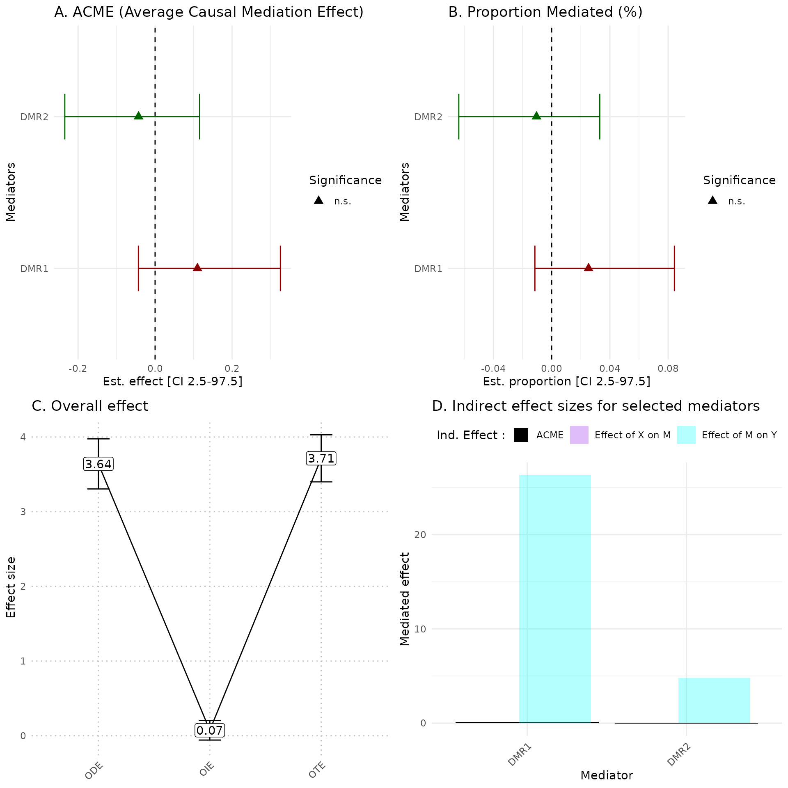

hdmax2 application
Florence Pittion, Magali Richard, Olivier Francois
January, 2024
hdmax2_tutorial.RmdTHIS VIGNETTE IS CURRENTLY UNDER DEVELOPMENT, SO ITS CONTENT IS PROVISIONAL.
Introduction
When a statistical association is observed between an external exposure (\(X\)) and an individual outcome (\(Y\)), one or more intermediate variables (M) (such as gene expression or epigenetic changes) may mediate this effect. Identifying and assessing the mediating role of these variables in the effect of \(X\) on \(Y\) is crucial for deciphering underlying causal mechanisms in epidemiological and clinical research. This process, known as mediation analysis, involves studying mediator variables to define the causal structure between \(X\) and \(Y\). The mediated effect, termed the indirect effect, is equal to the effect of \(X\) on \(Y\) mediated through (M), to distinguish from the direct effect of \(X\) on \(Y\) unexplained by (M).
The R package hdmax2 is dedicated to high-dimensional
mediation analyses. For mediation analyses, the necessary data includes
one (or more) exposure variable(s), a matrix of potential mediators, and
an outcome variable.
The term “high dimensional” refers to the large quantity of potential mediators among which we seek to identify the actual mediators.
The fundamental concept behind HDMAX2 methods is to use a latent factor mixed regression model for estimating unobserved latent factors while conducting high-dimensional association analysis. HDMAX2 also implements a novel procedure known as the max-squared test to assess the statistical significance of potential mediators. Finally, HDMAX2 enables the calculation of an overall indirect effect from a single model that includes all mediators simultaneously. This approach therefore takes into account correlations between mediators.
The hdmax2 program has been enriched with numerous
features, including the ability to manage various types of variables in
the exposure (continuous, binary, categorical, and multivariate), as
well as the capability to incorporate binary outcomes. This package
enables users to:
investigate associations between the variables \(X\), (M), and \(Y\),
compute the mediated effect for each potential mediator,
assess the overall indirect effect for the total model,
and visualize these results.
The package hdmax2 is designed to accept :
One or several Exposure variables \(X\) consisting of univariate data, which can be continuous, binary or categorical as well as multivariate exposure. We define \(n\) as the number of samples within the tested cohort. Therefore, each exposure and outcome variable consists of \(n\) measurements. In the
Rlanguage, categorical variables are encoded as factor objects. The functionas.factor()can be used to encode categorical variables. The functionslevels()andordered()can be used to define the order of the modalities of categorical variables. By convention,hdmax2uses the first modality as a reference to calculate the effects associated with the other modalities of the variable, as encoded by default in statistical regression models inR.Continuous intermediary variables, denoted as M, are represented as a matrix encompassing potential mediators, such as methylome or transcriptome molecular features. The matrix M should be entered as a separated input, without missing values. The intermediary variable matrix M is of dimension \(n \times p\), with \(p\) the total number of intermediate variables.
The outcome variable, denoted as \(Y\), corresponds to a vector of dimension \(n\), which supports both continuous and binary formats. Continuous and binary variables must be encoded in numeric format.
Optional covariates, \(Z\), can be included as observed adjustment factors in the model. Please refer to the helper function section for insight into how to interpret the additional set of covariates.
\(K\), the number of latent factors to be estimated.
To install the latest version of hdmax2, use the github
repository
#devtools::install_github("bcm-uga/hdmax2")METHOD
STEP 1: Run association studies
The run_AS function is applied:
First to estimate latent factors with \(lfmm\) algorithms.
Then to identify significant effects of exposure \(X\) on potential mediators in M matrix, and significant effect of potential mediators on outcome \(Y\).
And eventually to compute mediation test: max-squared test.
The run_AS function takes as inputs:
- \(X\) for exposure: can be a vector, a factor with \(n\) (samples) elements or a data frame with \(n\) rows and 1 column if univariate or \(x\) columns or different exposure variables if multivariate.
- \(Y\) for outcome: can be a vector or a matrix with \(n\) rows and 1 column.
- M for the potential mediators: must be a matrix with \(n\) rows and \(p\) columns (potential mediators).
- \(K\) for the number of latent factors defined earlier: must be integer.
- Adjustment factors covar can be included: must be numeric (data frame or matrix) with \(n\) rows.
The run_AS function provides an object containing:
Results from the two association studies (\(P\)-values, fscores, zscores),
Latent factors estimation matrix \(U\) (\(p\) rows and \(K\) columns) from first regression,
run_ASfunction’s inputs,And max-squared test \(P\)-values results.
Selection of a subset of mediators
max-squared \(P\)-values are used in the selection of mediators for the user’s chosen method.
Numerous selection methods are available, such as FDR control. Also in the context of methylation data, it’s feasible to to identify aggregated mediator regions (AMR) based on the paired \(P\)-values frome mediation test. Refer to the helper_functions vignette for assistance FDR control and AMR researching procedure.
For the two examples below, we opted for the top ten most significant \(P\)-values from the max-squared test as an example.
STEP 2
The function estimate_effect estimate the individual
indirect effect of mediators, but also overall effects of selected
mediators.
The function estimate_effect takes as inputs, step 1
object and selected mediators matrix \(M^S\) from chosen selection method apply on
max-squared test \(P\)-values.
The function estimate_effect use
mediation::mediate function to obtain several effects
estimation with uncertainty:
ACME Average Causal Mediation Effect: corresponding to the indirect effect
PM Proportion Mediate: corresponding to the proportion of the total effect that is mediated by the mediator
TE total effect: which is equal to the sum of direct and indirect effect
ADE Average Direct Effect: which represents the unmediated effect.
This step also compute Overall effects :
OIE (Indirect effect): corresponding to the sum of the indirect effect associated with all mediators.
ODE (Direct Effect): corresponding to the effect of exposure variables on the outcome variable.
OTE (Total Effect): corresponding to the effect of exposure variables on the outcome variable when the mediators \(M^S\) are included in the model.
In addition, function estimate_effect estimates the
intermediary effect sizes \(a_j\) and
\(b_j\) and their standard
deviations.
Simulated dataset
We simulated data for 100 samples and 500 potential mediators.
The matrix of potential mediators is an extract of real methylation data (TCGA PDAC samples).
We define the \(K\) number of estimated latent factors by performing a PCA on potential mediators matrix. The scree plot criterion looks for the “elbow” in the curve and selects all components just before the line flattens out, \(K\) is chosen with this procedure.
simu_data = hdmax2::simu_data
## Number of Latent factore estimation
pc <- prcomp(simu_data$M1)
plot((pc$sdev^2/sum(pc$sdev^2))[1:10],
type = "b",
xlab = 'Principal Component',
ylab = "Explained variance")
K=4 #pca conclusion : it is better to select too many factors that too fewFirst Example: Binary exposure and continuous outcome
For this example we use a binary exposure, a continuous outcome and two adjustment factors (age and gender).
Step 1
covar = cbind(simu_data$age, simu_data$gender)
covar = as.data.frame(covar)
hdmax2_step1 = hdmax2::run_AS(exposure = simu_data$X_binary,
outcome = simu_data$Y_continuous,
M = simu_data$M1,
K = K,
covar = covar)Selection of a subset of mediators
## Selecting top 10 mediators
mediators_top10 = simu_data$M1[,names(sort(hdmax2_step1$max2_pvalues)[1:10])]
head(mediators_top10)
#> cg00022633 cg00019093 cg00025981 cg00031759 cg00035636 cg00049102
#> GSM1051525 1.480526 1.091212 0.8611761 1.096765 1.498758 2.029784
#> GSM1051526 5.463677 3.474162 3.7370006 3.996897 1.481787 2.000932
#> GSM1051527 5.334700 3.369454 3.6640206 3.889718 1.439573 1.891203
#> GSM1051528 5.225207 3.289293 3.6175162 3.808743 1.443054 1.816579
#> GSM1051529 1.691596 1.260262 0.9876545 1.249065 1.603649 2.217188
#> GSM1051530 6.307245 4.088710 4.2104976 4.571531 2.310486 2.725880
#> cg00028749 cg00049616 cg00026603 cg00703120
#> GSM1051525 0.7984107 1.767392 1.840380 0.8521711
#> GSM1051526 3.9441627 1.743678 3.914640 0.8315540
#> GSM1051527 3.8633605 1.667866 3.856255 0.8473967
#> GSM1051528 3.8147481 1.599476 3.748134 0.8744509
#> GSM1051529 0.9114222 1.886485 1.997508 0.8602605
#> GSM1051530 4.3556358 2.324293 4.553996 0.8814345Step 2
hdmax2_step2 = hdmax2::estimate_effect(object = hdmax2_step1,
m = mediators_top10)Vizualisation of results
library(ggplot2)
hdmax2::plot_hdmax2(hdmax2_step2, plot_type = "all_plot")
#> [1] "hdmax2 plot for univariate exposome"
#> TableGrob (2 x 2) "arrange": 4 grobs
#> z cells name grob
#> 1 1 (1-1,1-1) arrange gtable[layout]
#> 2 2 (1-1,2-2) arrange gtable[layout]
#> 3 3 (2-2,1-1) arrange gtable[layout]
#> 4 4 (2-2,2-2) arrange gtable[layout]A Estimates of indirect effect (ACME) and B proportions of mediated effect (PM) for the top 10 mediators. The effect estimate is represented by a dot and its 95% CI by the bar. Symbols correspond to the significance cut off of 5% (square for p-value \(\geq 0.05\), circle p-value \(< 0.05\)). Colors correspond to the sign of the effect (green for estimated effect \(\leq 0\) , red for estimated effect \(> 0\)).
C Effect sizes of Overall Direct Effect (ODE), Overall Indirect Effect (OIE) and Overall Total Effect (OTE). Error bars correspond to standard deviation (ODE and OTE) or confidence interval (OIE).
D Indirect effect sizes for the selected mediators. Black corresponds to the ACME, violet to the effect of exposure \(X\) on mediator M, and blue corresponds to the effect of mediator M on outcome \(Y\).
In the plot_hdmax2 function it is possible to produce
the 4-plots set or each individual plot with plot_type
argument.
Second Example: multivariate exposure and continuous outcome
For this example we use a two variables exposure (continuous and binary), a continuous outcome and two adjustment factors (age and gender).
Step 1
## multivariate Exposures (continuous + binary)
X = data.frame(X1 = simu_data$X_continuous, X2 = simu_data$X_binary)
covar = cbind(simu_data$age, simu_data$gender)
covar = as.data.frame(covar)
hdmax2_step1 = hdmax2::run_AS(exposure = X ,
outcome = simu_data$Y_continuous,
M = simu_data$M2,
K = K,
covar = covar)
head(hdmax2_step1$max2_pvalues)
#> cg00005740 cg00006787 cg00007032 cg00008612 cg00009871
#> 3.847528e-20 1.864280e-14 3.894362e-155 1.964262e-12 4.594620e-10
#> cg00009922
#> 1.071120e-07Selection of a subset of mediators
## Selecting top 10 mediators
mediators_top10 = simu_data$M2[,names(sort(hdmax2_step1$max2_pvalues)[1:10])]
head(mediators_top10)
#> cg00007032 cg00022633 cg00025981 cg00031759 cg00028749 cg00019093
#> GSM1051525 1.764355 3.042535 1.987983 2.229753 2.020358 2.021450
#> GSM1051526 6.324724 7.291695 5.055701 5.322832 5.374205 4.562818
#> GSM1051527 7.849346 8.603409 6.022010 6.260643 6.420444 5.316097
#> GSM1051528 6.590844 7.295384 5.110906 5.310325 5.434230 4.522164
#> GSM1051529 2.352573 3.809111 2.515193 2.784983 2.567937 2.521325
#> GSM1051530 7.989509 9.701877 6.659326 7.033794 7.011228 6.110346
#> cg00014667 cg00012692 cg00018896 cg00005740
#> GSM1051525 2.104173 1.284970 2.200426 2.052600
#> GSM1051526 5.692560 4.653031 5.962785 5.143245
#> GSM1051527 6.884147 5.781892 7.210383 6.173062
#> GSM1051528 5.896802 4.873684 6.173285 5.317930
#> GSM1051529 2.569591 1.724780 2.615735 2.445169
#> GSM1051530 7.019162 5.875805 7.400408 6.219636Step 2
hdmax2_step2 = hdmax2::estimate_effect(object = hdmax2_step1,
m = mediators_top10)Vizualisation of results
library(ggplot2)
hdmax2::plot_hdmax2(hdmax2_step2, plot_type= "all_plot")
#> [1] "hdmax2 plot for multivariate exposome"

#> $X1
#> TableGrob (2 x 2) "arrange": 4 grobs
#> z cells name grob
#> 1 1 (1-1,1-1) arrange gtable[layout]
#> 2 2 (1-1,2-2) arrange gtable[layout]
#> 3 3 (2-2,1-1) arrange gtable[layout]
#> 4 4 (2-2,2-2) arrange gtable[layout]
#>
#> $X2
#> TableGrob (2 x 2) "arrange": 4 grobs
#> z cells name grob
#> 1 1 (1-1,1-1) arrange gtable[layout]
#> 2 2 (1-1,2-2) arrange gtable[layout]
#> 3 3 (2-2,1-1) arrange gtable[layout]
#> 4 4 (2-2,2-2) arrange gtable[layout]Please refer to previous example for figures comments.
Helper Functions
In this vignette, we also provide a series of helper function to process the data.
How to analyse agregated methylated regions ?
We simulated 500 samples and 1000 potential DNA methylation mediators, with various a binary exposure (smoking status of mothers) and continuous outcomes (birth weight).
Identifying aggregated mediator regions (AMR)
Identify Aggregated Methylated regions (AMR) with
AMR_search function which uses from the \(P\)-values from max-squared test
compute in run_AS function and using a adapted
comb-p method (comb-p is a tool that manipulates BED
files of possibly irregularly spaced \(P\)-values and calculates auto-correlation,
combines adjacent \(P\)-values,
performs false discovery adjustment, finds regions of enrichment and
assigns significance to those regions). AMR identification could be
useful in Epigenomic Wide Association Studies (EWAS) when single CpG
mediation is unsuccessful, or could be complementary analysis.
helper_ex = hdmax2::helper_ex
#Artificial reduction of dataset size to pass the github action check when building hdmax2 website
helper_ex$methylation = helper_ex$methylation[ , 800:1000]
helper_ex$annotation = helper_ex$annotation[800:1000, ]
pc <- prcomp(helper_ex$methylation)
plot((pc$sdev^2/sum(pc$sdev^2))[1:15],
xlab = 'Principal Component',
ylab = "Explained variance",
col = c(rep(1, 3), 2, rep(1, 16)))
# chosen number of dimension
K=5
## run hdmax2 step1
hdmax2_step1 = hdmax2::run_AS(exposure = helper_ex$exposure,
outcome = helper_ex$phenotype,
M = helper_ex$methylation,
K = K)
##Detecting AMR
seed = 0.6 #Careful to change this parameter when working with real data
res.amr_search = hdmax2::AMR_search(chr = helper_ex$annotation$chr,
start = helper_ex$annotation$start,
end = helper_ex$annotation$end,
pval = hdmax2_step1$max2_pvalues,
cpg = helper_ex$annotation$cpg,
seed = seed,
nCores = 2)
res.amr_search$res
#> chr start end p fdr
#> 2 1 1326166 1326221 0.005626678 0.01688003
#> 1 1 1310734 1310988 0.019799860 0.02138751
#> 3 1 1406862 1407016 0.021387509 0.02138751
res.arm_build = hdmax2::AMR_build(res.amr_search,
methylation = helper_ex$methylation,
nb_cpg = 2)
#List of DMR selected
head(res.arm_build$res)
#> DMR chr start end p fdr nb
#> 1 DMR1 1 1310734 1310988 0.01979986 0.02138751 2
#> 2 DMR2 1 1406862 1407016 0.02138751 0.02138751 2
##CpG in the DMR
res.arm_build$CpG_for_each_AMR
#> $DMR1
#> [1] "cg11518257" "cg15617543"
#>
#> $DMR2
#> [1] "cg10228629" "cg06377929"Quantifying indirect effects
Like with single mediators analysis esimate_effect function
could be use to estimate different effects of AMR. Also
plot_hdmax2 can be applied to step2 results.
## run hdmax2 step2
object = hdmax2_step1
mediators_top10 = helper_ex$methylation[,names(sort(hdmax2_step1$max2_pvalues)[1:10])]
m = as.matrix(res.arm_build$AMR_mean)
## selected mediators effects estimation
hdmax2_step2 = hdmax2::estimate_effect(object = hdmax2_step1,
m = m)
library(ggplot2)
hdmax2::plot_hdmax2(hdmax2_step2, plot_type= "all_plot")
#> [1] "hdmax2 plot for univariate exposome"
#> TableGrob (2 x 2) "arrange": 4 grobs
#> z cells name grob
#> 1 1 (1-1,1-1) arrange gtable[layout]
#> 2 2 (1-1,2-2) arrange gtable[layout]
#> 3 3 (2-2,1-1) arrange gtable[layout]
#> 4 4 (2-2,2-2) arrange gtable[layout]How to select potential mediators using q-values and FDR control ?
Several methods can be use to select potential mediators from step1
results of our method, in our main use cases we simply select top 10
mediators to simplify the narrative. Among available methods to select
mediators from mediation test \(P\)-values, we can use FDR (False Discovery
Rate) control. \(Q\)-value is obtained
from max-squared test \(P\)-values from step 1 with
fdrtools::fdrtools function then bounded by chosen
threshold.
## run hdmax2 step1
hdmax2_step1 = hdmax2::run_AS(exposure = simu_data$X_binary,
outcome = simu_data$Y_continuous,
M = simu_data$M1,
K = K)
## Select candidate mediator
q_values = hdmax2::hdmax2_qvalue(hdmax2_step1$max2_pvalues)
candidate_mediator <- q_values$qv[q_values$qv<= 0.2] # In this example, we will consider FDR levels <20%.
candidate_mediator
#> cg00018896 cg00019093 cg00022633 cg00024247 cg00025981 cg00028749
#> 1.097593e-02 3.839397e-10 3.379984e-15 2.861555e-02 3.977704e-06 2.864961e-02
#> cg00031759 cg00035636 cg00037930 cg00047079 cg00049102 cg00049382
#> 1.067235e-04 2.138923e-08 9.146395e-02 2.572296e-02 8.596995e-09 2.682088e-04
#> cg00049616 cg00241432 cg00345862 cg00465739 cg01005425
#> 2.397814e-05 1.455775e-01 7.647113e-02 1.761855e-01 1.300586e-01How to transform a categorial variable into an ordered factor?
When categorical variables are used as exposure variables,
hdmax2 uses the first category as a reference (intercept)
to calculate the effects associated with the variable’s other
categories. The functions HDMAX2::run_AS and
HDMAX2::estimate_effect will transform the character vector
you have used (if any) into a factor, with an arbitrary ordering of the
categories. If order is important to you, here’s a simple way to turn
your character vector into a factor and order the categories as you
wish. You can then use this variable as input to the hdmax2
functions.
How to handle adding an additional set of covariates to the second association study?
It is possible to add a second adjustment factors set in association
study between potential mediators and outcome if it makes sense from a
biological standpoint. Nevertheless, this additional set of adjustment
factors for the second association study must include the adjustment
factors from the first association study as design in
run_AS function.
# First adjustment factors set
covar = as.data.frame(helper_ex$covariables[,1:2])
# Second adjustment factors set
suppl_covar = as.data.frame(helper_ex$covariables[,3:4])
hdmax2_step1 = hdmax2::run_AS(exposure = helper_ex$exposure,
outcome = helper_ex$phenotype,
M = helper_ex$methylation,
K = K,
covar = covar,
suppl_covar = suppl_covar)